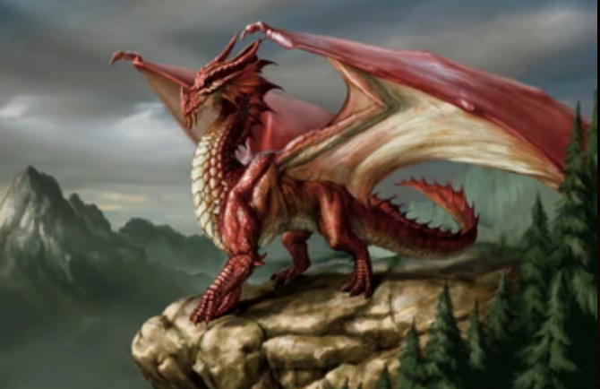

The Dragon is very popular for a mythical creature these creatures could brathe fire and were feared of eating pepole.
These cretures are known to billions of pepole yet unlike dinosaurs are not very informative
You can view my search engine at rushin92.github.io my travel sites at rushin92.github.io/travel or my page about dinosaurs at rushin92.github.io/dinosaurs
